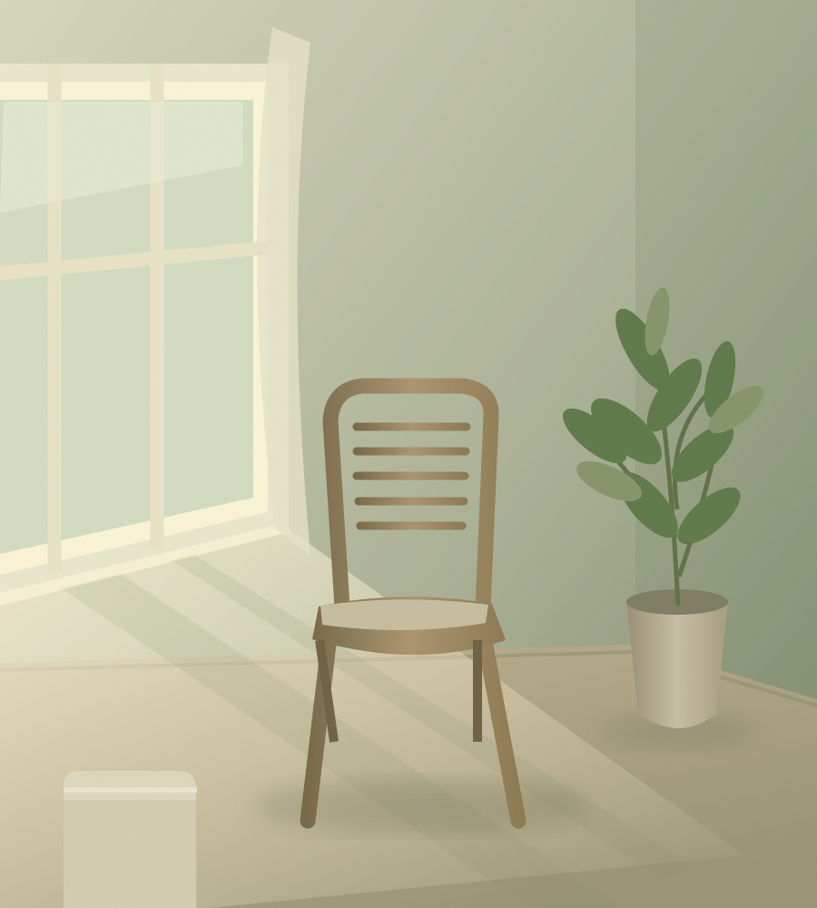

A LITTLE SPACE TO FEEL YOURSELF.暮らしのなかに、わたしに戻る時間を。
BODY, MIND & EVERYDAY LIFESCROLL TO EXPLORE ↓
01 — ABOUT US暮らしは、
暮らしは、
わたしの感覚から。
「心地よい」は、
きっと、身体が知っている。
暮らしデザイン研究所は、
身体を起点に、自分にとって心地よい暮らしを探究する場です。
身体の感覚に耳を澄ませ、
心の動きや、大切にしたい価値観に気づく。
住まい、音楽、対話などの体験を通して、
日々の選択と暮らしを、豊かに育んでいきます。
正解を探すより、自分の感覚をたしかめる。
そんな小さな一歩を、ここから。
02 — OUR EXPLORATIONS
暮らしをひらく、3つの入り口。
いつもの日々に、少しだけ新しいまなざしを。
03 — MUSIC & A BEAUTIFUL MOMENT
暮らしデザイン研究所の鑑賞会内なる美しさを、
音楽とともに。
エレガントな私、
音楽、宇宙が響きあう
日常の喧騒からはなれ、
少し早めにホールへ。
2026土曜日
横浜みなとみらいホール
開場14:10
開演15:00
- 指揮
- 小林研一郎
- 演奏
- 日本フィルハーモニー交響楽団
- 鑑賞会企画・アテンド
- 暮らしデザイン研究所
聴く前と、聴いたあと。いまの私を、そのままに。
暮らしデザイン研究所 LISTEN & FEEL
いま、内側に生まれることばを、そのままに
音楽と響きあう
ことばのシート
いま、ここにある感覚を、自由に。
01 鑑賞前｜いまの私
02 鑑賞後｜いまの私
03 前後を眺めて｜気づいたこと
04 感謝｜いま、ありがとうを贈るなら
1枚の余白
04 — A MOMENT FOR YOURSELF
暮らしの小さな道具音楽の余韻を、
わたしのことばに。
音楽を聴く前と、聴いたあと。
身体の感覚や、心に浮かんだことばを
一枚のシートに、自由に書き留めてみませんか。
変化や感謝を、無理に探さなくて大丈夫。
空欄でも、そのままのあなたを大切に。
2026.10.31（土）横浜みなとみらいホール
指揮：小林研一郎 ／ 演奏：日本フィルハーモニー交響楽団
A4・1枚 ／ 無料 ／ 印刷・PDF保存できます
書き込み用PDFをダウンロード ↓SMALL STEPS, RICHER DAYS.
今日の「心地よい」を、ひとつ。
好きな音楽をかける。窓をひらく。誰かと話す。
暮らしの探究は、そんな小さなことから。